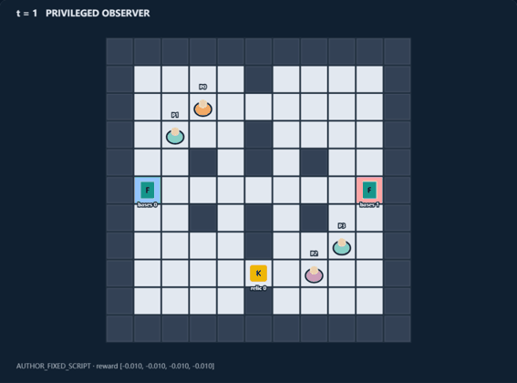
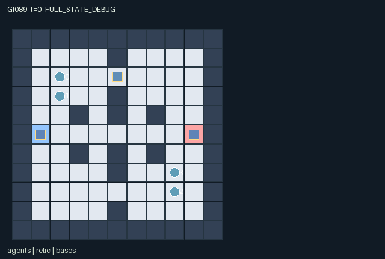

GI089 / SPATIAL
灯火拦截
侦察员与奔跑者组队争夺遗物；照明向双方暴露信息，并消耗真实能量和行动。
Original saved demonstration
Recorded native state, often authored scripts or interventions; information scope and failures are preserved in the original provenance. This is a saved demonstration, not live browser play.

Release verification episode
Untrained uniform legal actions. Actual JAX state sampled along the full original episode; full-state debug camera. No human performance or learning claim.

Run this game
crucibles play --game 89
Start Python locally, then open the address printed by the terminal. Installation, multiplayer, takeover and keyboard controls →
Objective, rewards & ending
Exact task contract
{
"objective": "Bring the single relic to your team base with your runner carrying and your scout simultaneously co-signing nearby, while the other team can intercept.",
"natural_termination": "One team natural-completes when its runner stands exactly on its base holding the relic and its adjacent scout also chooses CO-SIGN, with neither hit by an unprotected tag that turn.",
"interaction": "A scout public lantern reveals information to both teams; coordinated screens prevent enemy tags, tags stun and drop carried relics, paired handoffs exchange cargo, and extraction needs both teammates in space and time.",
"observation_access": "Public fixed map, bases, active lantern positions/lifetimes and alarm/claim/extraction announcements. Scouts see agents and relic within Manhattan radius 4; runners see agents within 2 and recognize relic within 1. Any active lantern makes agents/relic within 3 visible to everyone, through walls by the stated radio-scan rule."
}Declared per-step reward bounds: -7.0 to 7.0. Observability: partially_observable.
Rules
- Two teams each have one scout and one runner. The relic starts at one of three original ridge openings chosen from the reset key.
- Scouts see farther. A four-turn lantern reveals nearby agents and the relic to both teams, at a real energy/action cost.
- Pick up within one cell. A carrying scout can move only on even old-clock turns; runners do not have that carrying slowdown.
- Both adjacent teammates must choose HANDOFF to transfer. The relic position follows its actual carrier.
- TAG costs one energy and starts a three-turn cooldown. A hit stuns for two turns and drops any carried relic.
- A teammate SCREEN blocks tags on the adjacent partner for that turn. It cannot protect the screener itself.
- Extract only with the runner on its own pad holding the relic and an adjacent scout co-signing on the same turn.
- Tags occur before pickup, handoff and extraction; either participant being hit can disrupt a rendezvous.
- WAIT restores one energy. Public notices do not disclose hidden positions. Each role view uses actual visibility masks.
Original mechanism document (historical status wording retained)
# Lantern Intercept **Status: AUTHORED_NOT_EXECUTED.** A two-team retrieval contest with asymmetric reconnaissance and a deliberately public signaling device. The same flash can guide a short-sighted teammate and expose the objective or route to an opponent. Protecting the partner, taking custody and meeting for extraction compete for actions and positions. ## Rules and real cross-agent dependencies The original alley map has a ridge at x=5 with openings at y=2,5,8, four side obstructions and bases [1,5], [9,5]. Reset chooses one of the three ridge openings using jax.random.randint on the supplied key. The key and unobserved cache index are not placed in policy observations. Team 0 consists of roles 0 (scout) and 1 (runner); team 1 consists of roles 2 (scout) and 3 (runner). Local visibility uses Manhattan radii and radio scans through walls, not an unstated optical line-of-sight model. Scouts see agents and relic within four cells. Runners see agents within two but only recognize the relic within one. FLASH is scout-only, costs one energy and an action, and places that team's four-turn lantern at the scout's actual current cell. Either lantern makes nearby agents and the relic public within radius three. Its position and lifetime are public. Thus transmitting useful information also enables enemy reactions; staying silent, sending an escort, or passing cargo can be preferable depending on the opposing policy. The lantern remains at the activation cell when its scout moves. Any role may pick up the grounded relic from distance at most one. Multiple eligible pickups use rotating identity priority. A carrying scout's cardinal movement is masked on odd old-clock turns, while a carrying runner remains mobile. An adjacent teammate handoff requires both actors to choose HANDOFF; an attack on either participant cancels it. The relic follows its holder's real position, or stays on the actual drop cell after an attack. It is deactivated only by actual final extraction. TAG attempts cost one energy and impose a three-turn cooldown. They target one adjacent enemy after movement, with rotating identity tie priority, and unprotected hits force two subsequent WAIT turns. SCREEN costs one energy, protects an adjacent teammate from all simultaneous tags that turn, and never protects the screener itself. Tags may disrupt a scout before any retrieval, a runner with cargo, or either extraction participant. A hit drops held cargo. A legal pre-step pickup cannot be created retroactively by that turn's drop. Simultaneous attacks and screens are resolved without an arbitrary first-mover identity advantage. The final rendezvous requires the runner to hold the relic exactly at its own base, its scout to be within one cell, and both to choose CO-SIGN on the same turn. Neither may be newly stunned. Co-signing uses the action that might otherwise screen a partner, creating a real final tactical tradeoff. Teams cannot win independently because there is only one relic and extraction ends the shared episode. ## Kernel, information and rewards A=4, O=63, U=11, H=100. Coordinates are integer [x,y], with y increasing downward. All state leaves are fixed-shape int32, float32 or bool arrays; all observations and rewards are float32. The 63-column observation contains identity, public announcements/base/lantern fields, four masked agent slots and one masked relic slot. Agent role/team identity is fixed by slot and also displayed; energy, stun and cooldown are disclosed only if the agent is visible. The carrying owner is attached to the relic, not to an independently visible agent attribute, avoiding a renderer-only disclosure of hidden relic ownership. Active lanterns reveal their actual fixed scan origin; inactive lantern coordinates are zero-masked. Public pickup/tag/claim notices carry team counts/bits, not hidden position data. Each live step sanitizes intents; moves agents with conservative no-swap/no-shared-destination collisions; updates scout lanterns; resolves post-movement tag targets and partner screens; updates energy, stun and cooldown; follows/drops the relic; handles eligible pickups and paired transfers; checks joint extraction; refreshes actual visibility. WAIT restores one energy even during a forced stun turn. Energy stays in [0,3]. A missed legal tag intent still spends energy and starts its cooldown. Agents remain physically present while stunned and can block a passage. Each live turn costs each role 0.01. FLASH, TAG and SCREEN each cost the acting role another 0.02. The first time a team ever holds the relic, both teammates receive 0.25, once per team per episode; repeated passing/pickup cannot farm that bonus. Natural extraction pays both winners +6 and both opponents -6. The game therefore has team coordination plus direct rivalry; it is not exactly zero-sum because of costs and first-claim rewards. [-7,7] bounds every one-step reward. A no-extraction horizon truncation has no invented winner. The binding addendum is implemented: a live input advances the scalar int32 clock by one; natural completion takes priority over the horizon. Already-terminal raw calls preserve the complete state, observation, clock, terminal causes and final event flags, return zero rewards and all-true dones. They are not extra gameplay transitions. The only legal terminal action is WAIT. Autoreset belongs to an external wrapper. No individual is removed from the world before joint completion. Invalid or out-of-range actions become WAIT; blocked cardinal directions remain legal attempted movements and may produce no motion. Each observation slice, entity position, active mask, visibility mask and displayed attribute is declared in manifest.json. scene.json repeats exactly the hash-bound map and declared channels. Its motion comes only from real state positions. A debug full-state view must remain distinct from role views. Public event channels are explicitly present in each role observation; local object/agent attributes are zero-masked together with a visible bit. A hidden entity is not a position hint. ## Literal source evidence - Reset-key-driven hidden initial resource location: candidate.py:L41 — `cache_index = jax.random.randint(key, (), 0, 3, dtype=jnp.int32)` - Asymmetric role recognition range: candidate.py:L24 — `relic_radius = jnp.where(s["role"] == 0, 4, 1)` - A public light changes every role information: candidate.py:L26 — `relic_public = jnp.any(lit_relic & (s["beacon_ttl"] > 0))` - Scout transport has a role-specific temporal cost: candidate.py:L102 — `slow = (s["role"] == 0) & (carrier == jnp.arange(4)) & (jnp.mod(s["t"], 2) == 1)` - A partner action blocks the enemy effect: candidate.py:L145 — `protected = (a[partner] == 9) & (distance[jnp.arange(4), partner] <= 1)` - The hit has persistent control consequences: candidate.py:L147 — `stun = jnp.where(victim, 2, jnp.maximum(0, s["stun"] - 1))` - A carrier hit changes actual resource ownership: candidate.py:L154 — `dropped = (carrier >= 0) & victim[safe_carrier]` - Both teammates must choose the handoff: candidate.py:L165 — `handoff = (carrier >= 0) & (a[safe_carrier] == 7) & (a[receiver] == 7)` - Final payoff requires a spatially and temporally joint rendezvous: candidate.py:L179 — `delivered = (carrier == runners) & at_base & scout_near & (a[runners] == 10) & (a[scouts] == 10)` - First claim cannot be rewarded repeatedly: candidate.py:L172 — `new_claim = held_team & ~s["claim_once"]` Method extents in this exact source: - `direction`: candidate.py:L12-L14. - `refresh`: candidate.py:L16-L29. - `reset`: candidate.py:L31-L72. - `observe`: candidate.py:L74-L92. - `legal_actions`: candidate.py:L94-L113. - `advance`: candidate.py:L115-L210. - `absorb`: candidate.py:L212-L215. - `raw_step`: candidate.py:L217-L218. ## Fixed witnesses and intended intervention differences All three scripts are deliberately local and independent of the random cache choice. They never assume a particular reset randint output or issue a conditionally illegal pickup. The center lantern is intended to cover all three possible cache openings. The escort pair differs in exactly one defending action and then uses identical waits to expose persistence/recovery. These scripts do not attempt or certify pickup, handoff or whole-task extraction; those mechanisms are implemented in the source and remain for independent real replay. No scripted outcome is an execution receipt. A successful-looking path in prose is only a prediction from the rules. Scripts that exercise local mechanisms intentionally do not assert whole-task completion. ## Invariants, variation and limits Declared invariants include unique positions and nonnegative energy/stun/cooldowns/lifetimes/team/role fields. Construction bounds are energy<=3, stun<=2, tag_cooldown<=3, beacon_ttl<=4 and per-team tag_notice<=2. There is at most one carrier, one relic, and one winner. Roles remain active while stunned. A carrier stays recorded on final extraction although the delivered relic becomes inactive. Reset randomness is limited to one resource location, so no broad task distribution or generalization claim is made. Changes in scan publicity/range, carrying speed, passage layout or extraction co-sign requirements would change useful team/opponent responses; those possibilities are not tested variants. Integer sign-bearing fields (for example no-owner=-1) remain exact int32 values. There is no design-specified int8 distribution to adapt. The external uint32 PRNG key is not duplicated as a state leaf. Only reset uses randomness, through jax.random.randint(key,(),0,3,dtype=int32). Live transitions are deterministic conditional on state/actions; their external key is accepted but unused. No reset-key or RNG state is stored in the policy state. ## Provenance and reference use This is an original authored kernel for initial window0, attempt00, in the train source stream. No prior candidate, project execution result, heldout layout, evaluation score, ranking or final test was read. No candidate or JAX was imported or run. The action lists are fixed hypotheses, not recorded trajectories. Interface/R0 checks, numerical parity, actual legality along the scripts, intervention replays, animation, training, solvability, optimality, strategic richness and meta-learning effects remain unestablished. Only supplied official references were used. JaxMARL's README informed the intended simultaneous multi-agent adapter boundary (agent-keyed dictionaries and __all__ belong in the later integration layer). Pgx's README informed the separation of explicit transition keys, legal masks and raw terminal state. Craftax's README informed the distinction between a world kernel, state-based rendering and an external reset wrapper. PureJaxRL is an algorithm implementation reference, not a game library; its performance statements are not evidence about this game. Craftax_Baselines/ppo_rnn.py was read only at its environment/reset wrapper interfaces; no PPO/network code or benchmark mechanics were copied. No upstream implementation or map is incorporated. These references are attributed in generation_record.json with exact supplied file hashes and upstream URLs. The copied community_delivery_requirements.json still lists IDs 82-85. The exact assigned design/request IDs 86-89 control this batch; the general interaction and presentation requirements are applied without rewriting that input. Actual dispatch identity, backend and usage evidence are retained by the coordinator, not invented here.
Commands
Roles & abilities
agent_0 team 0 scout: long range scan, public lantern, slowed when carrying
agent_1 team 0 runner: short range relic recognition, extraction carrier
agent_2 team 1 scout: long range scan, public lantern, slowed when carrying
agent_3 team 1 runner: short range relic recognition, extraction carrier
Observation permissions
Training receives only the original observation rows. Role cameras use declared visibility; debug cameras are explicitly marked. Local benchmark records log debug exposure and role takeover history.
Exact observation layout
[
{
"slice": [
0,
4
],
"meaning": "Observer identity one-hot",
"visibility": "self"
},
{
"slice": [
4,
7
],
"meaning": "Public t/100, done, (winner+1)/2",
"visibility": "public"
},
{
"slice": [
7,
9
],
"meaning": "Public pickup notices for teams 0 and 1",
"visibility": "public"
},
{
"slice": [
9,
11
],
"meaning": "Public per-team newly stunned agent count /2",
"visibility": "public"
},
{
"slice": [
11,
13
],
"meaning": "Public ever-held-relic bits for teams 0 and 1",
"visibility": "public"
},
{
"slice": [
13,
15
],
"meaning": "Public final extraction notices for teams 0 and 1",
"visibility": "public"
},
{
"slice": [
15,
19
],
"meaning": "Public team 0/team 1 base [x/10,y/10] positions",
"visibility": "public"
},
{
"slice": [
19,
27
],
"meaning": "Public two lantern slots [x/10,y/10,ttl/4,active]; inactive lantern data is zero",
"visibility": "public"
},
{
"slice": [
27,
59
],
"meaning": "Four agent slots [x/10,y/10,energy/3,stun/2,tag_cooldown/3,role,team,visible]; all fields zero if not locally visible or lit",
"visibility": "local"
},
{
"slice": [
59,
63
],
"meaning": "Relic [x/10,y/10,(carrier+1)/4,visible]; zero unless recognized locally or illuminated and active",
"visibility": "local"
}
]Entity visibility & attributes
[
{
"id": "agents",
"kind": "agent",
"count": 4,
"position": [
"agent_pos"
],
"active": [
"agent_active"
],
"visibility": [
"agent_visible"
],
"attributes": [
{
"state_path": [
"team"
],
"meaning": "Team identity, 0 or 1",
"display": "category"
},
{
"state_path": [
"role"
],
"meaning": "Role: scout 0, runner 1",
"display": "category"
},
{
"state_path": [
"energy"
],
"meaning": "Energy, capacity 3",
"display": "bar"
},
{
"state_path": [
"stun"
],
"meaning": "Forced WAIT turns remaining",
"display": "number"
},
{
"state_path": [
"tag_cooldown"
],
"meaning": "Turns until a further tag is legal",
"display": "number"
}
]
},
{
"id": "relic",
"kind": "object",
"count": 1,
"position": [
"relic_pos"
],
"active": [
"relic_active"
],
"visibility": [
"relic_visible"
],
"attributes": [
{
"state_path": [
"relic_carrier"
],
"meaning": "Carrier identity; -1 means on ground",
"display": "category"
}
]
},
{
"id": "lanterns",
"kind": "landmark",
"count": 2,
"position": [
"beacon_pos"
],
"active": [
"beacon_active"
],
"visibility": [
"beacon_visible"
],
"attributes": [
{
"state_path": [
"beacon_ttl"
],
"meaning": "Public light lifetime remaining",
"display": "number"
}
]
},
{
"id": "bases",
"kind": "landmark",
"count": 2,
"position": [
"base_pos"
],
"active": [
"base_active"
],
"visibility": [
"base_visible"
],
"attributes": []
}
]Actual verification & provenance
Per-game execution receipt
{
"game": "gi089",
"status": "PASS",
"verification_revision": 2,
"source_sha256": "0eb71ead2afbbe9f80e84fd2b382a2431f9a87610211f6ef2c2540ea1d88a7fb",
"seed": 20261101,
"runtime": {
"jax": "0.4.38",
"numpy": "1.26.4",
"devices": [
"TFRT_CPU_0"
]
},
"dimensions": {
"num_agents": 4,
"observation_size": 63,
"num_actions": 11,
"max_steps": 100
},
"checks": {
"eager_reset": {
"status": "PASS",
"seconds": 3.256091833114624
},
"observation_spaces_legal_masks": {
"status": "PASS",
"seconds": 0.8560209274291992
},
"eager_step": {
"status": "PASS",
"seconds": 0.8428661823272705
},
"jit_reset": {
"status": "PASS",
"seconds": 0.23997902870178223
},
"jit_step": {
"status": "PASS",
"seconds": 0.7748227119445801
},
"eager_jit_integer_parity_float_measurement": {
"status": "PASS",
"seconds": 0.0010058879852294922
},
"jit_vmap_reset": {
"status": "PASS",
"seconds": 0.3227055072784424
},
"jit_vmap_step": {
"status": "PASS",
"seconds": 1.3265352249145508
},
"outer_autoreset_api": {
"status": "PASS",
"seconds": 1.099506139755249
},
"full_original_horizon_episode_and_render": {
"status": "PASS",
"seconds": 2.1774702072143555
}
},
"human_scores": null,
"browser_controls": "PENDING",
"failures": [],
"elapsed_seconds": 11.390926361083984,
"float_parity_max_abs": 0.0,
"numerical_parity": "EXACT",
"raw_terminal_absorbing": "PASS",
"terminal_outer_reset": "PASS",
"episode_steps": 100,
"scripted_random_returns": [
-1.1399999745190144,
-0.9999999776482582,
-1.3599999696016312,
-1.0199999772012234
],
"terminal": true,
"demo_information": "FULL_STATE_DEBUG",
"demo_frames": 26,
"render_roles_checked": 4
}Chromium control verification
{
"game": "gi089",
"status": "PASS",
"human_scores": null,
"engineering": true,
"checks": [
"catalog_selected_and_real_native_reset",
"dom_queue_and_native_step",
"second_participant_ownership_and_native_joint_step",
"all_roles_individually_controllable_no_role_cap",
"explicit_debug_camera",
"release_to_pure_ai_without_reset"
],
"ui_sha256": "15b5861d23b3c42811865c954d5a988280bbfd21cf8e93754be2437a027158c5",
"seconds": 4.161632299423218
}Original identity and file hashes
{
"id": 89,
"key": "gi089",
"title": "灯火拦截",
"summary": "侦察员与奔跑者组队争夺遗物；照明向双方暴露信息，并消耗真实能量和行动。",
"tags": [
"团队追逐",
"信息代价"
],
"family": "spatial",
"dimensions": {
"num_agents": 4,
"observation_size": 63,
"num_actions": 11,
"max_steps": 100
},
"source_sha256": "0eb71ead2afbbe9f80e84fd2b382a2431f9a87610211f6ef2c2540ea1d88a7fb",
"manifest_sha256": "e65d8a2c3b666f3d3f56aabcba291a825a0904549013d375e5536965d5035c9a",
"files": [
{
"file": "candidate.py",
"sha256": "0eb71ead2afbbe9f80e84fd2b382a2431f9a87610211f6ef2c2540ea1d88a7fb",
"bytes": 13184,
"origin": "work/exp_2/game_incubator_v3/community_games222_225_visualization_root222_v1/native154_candidate/registry/v2/games/game-v3-00089/candidate.py"
},
{
"file": "manifest.json",
"sha256": "e65d8a2c3b666f3d3f56aabcba291a825a0904549013d375e5536965d5035c9a",
"bytes": 13080,
"origin": "work/exp_2/game_incubator_v3/community_games222_225_visualization_root222_v1/native154_candidate/registry/v2/games/game-v3-00089/manifest.json"
},
{
"file": "scene.json",
"sha256": "cd12b8f699ddb2feb59f0b15d023df93e54157181c79356d9aaafffbcf4a704b",
"bytes": 7247,
"origin": "work/exp_2/game_incubator_v3/community_games222_225_visualization_root222_v1/native154_candidate/registry/v2/games/game-v3-00089/scene.json"
},
{
"file": "mechanism.md",
"sha256": "061dd615ed97dcd987821947d5c5513eb803702047db032f566e29e4e133778b",
"bytes": 11580,
"origin": "work/exp_2/game_incubator_v3/sources/game-v3-00089/attempt_00/mechanism.md"
},
{
"file": "playthrough.json",
"sha256": "8fe07667f00b2317c68cc33f2fbd59288ffe52ca5063a33a46b0549ae35e7154",
"bytes": 7810,
"origin": "work/exp_2/game_incubator_v3/sources/game-v3-00089/attempt_00/playthrough.json"
}
],
"original_status": "NATIVE154_REFERENCE",
"original_saved_replay": true,
"release_validation": "PASS",
"human_scores": null,
"browser_validation": "PASS"
}